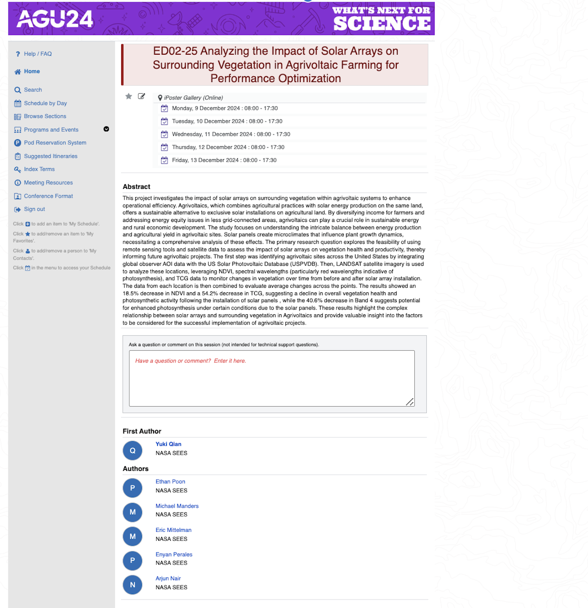

Research
Remote Sensing Research Intern
NASA
Built a remote-sensing pipeline using Landsat time-series data across U.S. agrivoltaic sites to study vegetation change before and after solar installation.
25-year time series
18% NDVI decrease
AGU 2024

Presented at the American Geophysical Union Annual Meeting, 2024.
Remote Sensing for Disaster Response
MIT Lincoln Laboratory
Developed and evaluated CNN-based models for hurricane damage assessment from aerial imagery and used model predictions for geospatial post-disaster analysis. Presented the work at the International Virtual Science Symposium.
78% accuracy
5 damage levels
International Virtual Science Symposium